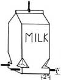

Many readers wrote MOTHER In response to Donald and Cindy McBride's item in issue 70 about recycling charcoal. Apparently there are a number of ways to get the most out of your briquettes. For instance, Lafayette, Indiana's John Jordan (among others) suggested using tongs to transfer the hot coals to a metal bucket with a tight-fitting metal lid. The embers will suffocate in a short time ... saving you the hassle of dousing and drying the coals.
Lima, Ohioan H.W. Oats added another twist: He uses two metal pails, fills one of them with dry sand, and then pours a two-inch layer of the gritty substance into the empty pail before putting in the hot coals. Next, H.W. dumps the remaining sand into the first bucket, suffocating the smoldering briquettes. When he's ready to barbecue again, Chef Oats simply pours the contents of the first pail through a piece of 114 "mesh screen into the second ...and ends up with nice dry coals and clean sand!
Connie Toops turns half-gallon milk cartons into handy bird feeders around her home in Ocean Springs, Mississippi. First, she makes 2" slits parallel to (but 1 inch up from) the bottom at all four comers. Next, she folds the carton's edges inward above each cut, creating four little access ports, and runs two 8" lengths of 114" dowel-to serve as perches-through holes punched below the ration stations. Then the bird lover suspends the feeder by a cord and fills it, through the pouring spout, with seed.
Much to Ms. Toops's delight, her feathered friends now frequent her "milk bars" all year long. (She reminds us, however, that birds will come to depend upon their free food, and may starve if the handouts stop during the winter.)
Two of our readers in Mexico came up with a simple but effective solar water heater. Harrold and Nancy Andresen spread out a 300-foot coil of 314" black plastic water hose on their flat roof ...hooked its inlet into their domestic water system ...and connected the outlet to the waterline leading to the laundry room.
According to the Monterrey residents, the hose provides 25 gallons of hot water before it begins to cool off ...and is able to "recover" quickly enough to keep up with the demands of an automatic washing machine.
Cathy Amanti had long wanted a root cellar for storing bulk grains and homegrown produce. Since money was too scarce for her family to afford one, the Chino Valley, Arizonan decided to improvise. Cathy took an old garbage can (a 55-gallon drum would work equally well), cleaned it out, and buried the container in the ground ... leaving about a six-inch rim showing. She then filled the can with her perishables, secured the lid, and covered it all with straw. Finally, the do-it-herselfer built a little wall of loose bricks around the straw and covered the "insulation" with a piece of plywood weighted down by rocks.
Now Mrs. Amanti has several of the cans buried ...she keeps dried beans and grains in one, and fruits and vegetables in the others!
The garden work may finally be subsiding, but there are always plenty of other chores to do when autumn rolls around. And one of the most obvious of those tasks presents itself every time you walk outdoors ...past that painfully small woodpile. So here are a few bits of lore which, we hope, will inspire you to get your chopping done ...with as few annoyances as possible.
Gary Albring reports that-in the past-he went to considerable effort trying to clean the remaining wood out of the head every time his maul handle broke off (an all-too-frequent occurrence). Now, the Curran, Michigan resident simply places the handleless head in his woodstove fire overnight. In the morning (after the head has cooled), the splittin' iron is ready for a new handle.
Don't bother to buy expensive tarps to keep your woodpile dry this winter. Instead, make a custom-fitted cover from some clear, heavy plastic such as polyethylene, suggests Jack Goulet of Gettysburg, Pennsylvania.
Jack measures his woodpile's length and width, and doubles the width figure when cutting the plastic to size. He then folds the material over and staples the ends together. Next, he secures a piece of scrap lumber along the entire length of each side, and hangs his self-made tarpaulin over the woodpile so that the 2 X 4's (or what have you) act as weights to keep the plastic in place.
Many woodstoves feature temperature-tolerant glass windows ...which tend to soot up quickly. The need to clean that glass constantly was Dave Johnson's pet peeve in life ...until the Coloma, Wisconsin resident discovered a surefire trick to do the job.
Use a rag or a paper napkin to scoop up the stove's ashes and use them to clean the window. They're alkaline and, Dave says, just abrasive enough to loosen sooty deposits without scratching the glass.
In most parts of North America, apples are coming in pretty hot and heavy during this time of the year, and Gladys Carpenter has a good tip for storing the sweet fruit. Gladys-who resides in Millers Falls, Massachusetts-packs surplus apples in her grain storage bin, alternating layers of the grain with those of the fruit, and thus helps to keep both edibles in fine condition for many months. (For those of you who don't store large amounts of grain, Mrs. Carpenter suggests trying the same method using fine, dry sand.)
While we're on the subject of storing perishables, did you know that fresh raw eggs can be frozen? Mrs. Charles Bowman, who lives in McHenry, Maryland, reports success using the following method: Rinse (but don't dry) two ice cube trays and two cups. Separate one egg at a time, placing the yolk In one cup and the white in the other. Pour the white into an ice cube compartment in the first tray, and the yolk into one of the second tray's compartments.
After all the eggs have been separated and the trays filled, cover each yolk with cold water (leave the whites as is) and place both trays in the freezer. Once the liquids are well frozen, remove the cubed eggs from the trays and store them in freezer boxes or bags. Then you can thaw yolks and whites as needed.
"Flashlights that are kept in backpacks, saddlebags, or auto glove compartments will often accidentally 'turn on', leaving the batteries to die a premature death," writes Cynthia Burns of Puyallup, Washington. "Not only can this be annoying ...it can also leave you without light in an emergency situation.
"A simple solution to the problem is to reverse the top battery so it can't make contact. Then just turn the cell around whenever you need the light."
If you're ever in need of a large, sturdy container, try asking some of your local fast-food restaurants for a pickle bucket. Jan Gervais of Le Mars, Iowa reports that many places use up pickles quickly and are more than happy to give the tubs away. Most of the pails sport strong, comfortable handles ...but if you want one with a lid-she warns-you'll have to ask the manager in advance, since the tops are often broken and discarded.
"When my daughter was learning to walk last winter, our floors were too cold for her bare feet, but her young legs couldn't stay upright if she wore slippery socks or booties," wrote Christina Liggitt-Eicholtz from Billings, Montana. "And-especially at $14 a pair-I didn't care to put her into hard shoes at such an early age. So I rummaged through my yam and scrap bags and found about two ounces of soft gray worsted and an old leather elbow patch.
"I knitted my baby a pair of socks-any bootie pattern will work-and then, using a suede punch to make the holes before stitching, sewed ovals of leather to the soles. A bit of elastic, fastened loosely at the ankle, completed my little girl's warm, woolly, nonskid shoes."
Need a recipe for a good white laundry soap? Eula Graber of Lincoln City, Oregon begins by melting 4-112 pounds of clean fat, which she boils in water to remove the salt. When the mixture is cool, Eula skims the fat off the top, and "fries" all the water out of it to prevent mold growth.
She next dissolves one can of lye (cover all surrounding surfaces with newspaper, handle the lye with extreme care, and keep children and pets away while working with this dangerous substance) in a porcelain container holding three quarts of cold water combined with one cup of bleach. She then adds 314 cup of 20 Mule Team Borax, and lets the resulting mixture cool.
When the fat and the lye water are the same temperature (though still quite warm), Ms. Graber slowly adds the lye to the fat (be sure to read directions) and stirs. She subsequently mixes the liquid-for periods of 15 minutes-several times during the following 36 hours. The cleaner should then, she says, be allowed to age for two weeks before it's used.
OK. Now it's YOUR turn! We've all come up with some practical, down-home, time-tested solutions to the frustrating little problems that bug us every day. Let's hear YOUR best "horse sense"ideas so we can share 'em and all benefit.
Send your pointers to Down-Home Country Lore, P.O. Box 70, Hendersonville, North Carolina 28791, and I'll make sure that the most useful of the suggestions will appear in upcoming editions. A one-year subscription-or a one-year extension of an existing subscription-will then be sent to each contributor whose tip does get printed in this column.MOTHER.
|
 |
|
|